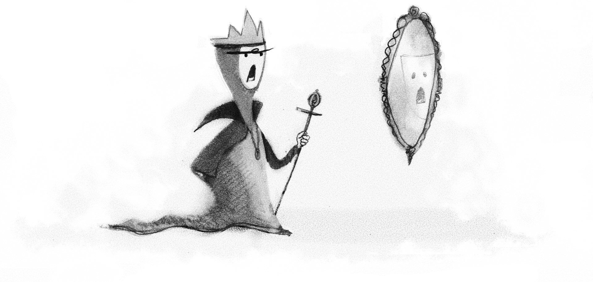

UX in the age of personalization
"There is a watershed moment approaching for personalization design. Most strategy is still driven out of marketing and IT departments, a holdover from the legacy of the inbound, “creepy” targeted ad. According to Colin Eagan, fixing that model requires the same paradigm shift we’ve used to tackle other challenges in our field. In this piece, he takes a detailed look at the UX practitioner’s emerging role in personalization design: from influencing technology selection, to data modeling, to page-level implementation. It’s now 2019, and the timing couldn’t be better."
More from a list apart
Conversations with Robots: Voice, Smart Agents & the Case for Structured Content
Why structured content is now necessary to ensure the accuracy and integrity of your content across the evolving digital landscape